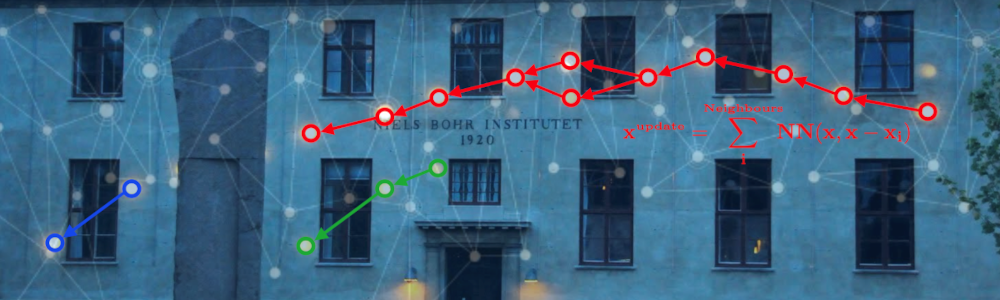
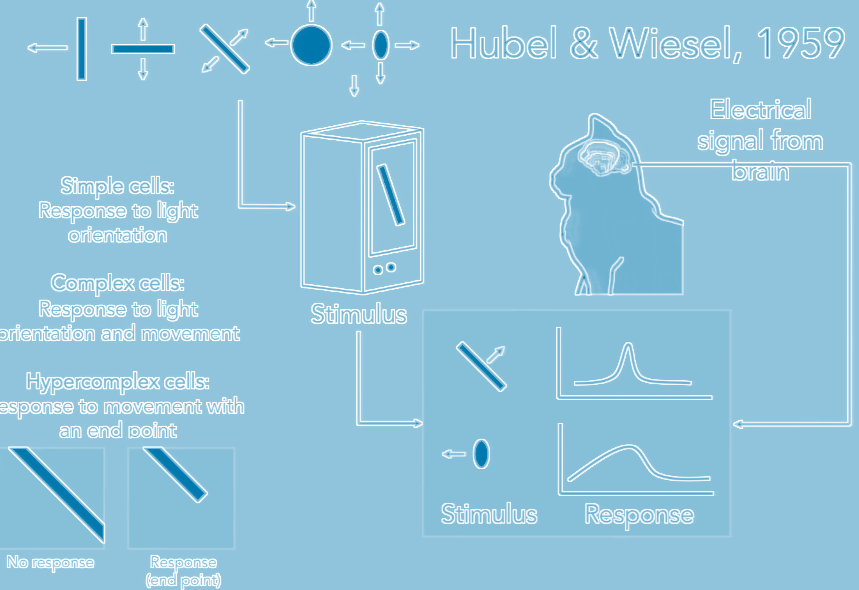

Lecture 13 – Applications of Machine Learning in CFD and GFD
What Is Learning
Falsifiability is fundamental to learning. If a theory is falsifiable then it is learnable – i.e. admits a strategy that predicts optimally. An analogous result is shown for universal induction.
A theory that explains everything, [predicts] nothing.
Reference: Falsifiable ⟹ Learnable
What Is Machine Learning
The goal of machine learning is to make computers “learn” from “data”. From an end user’s perspective, it is about understanding your data, make predictions and decisions. Intellectually, it is a collection of models, methods and algorithms that have evolved over more than a half-century now.Machine Learning vs Statistics
Historically both disciplines evolved from different perspectives, but with similar end goals. For example, Machine Learning focused on “prediction” and “decisions”. It relied on “patterns” or “model” learnt in the process to achieve it. Computation has played key role in its evolution. In contrast, Statistics, founded by statisticians such as Pearson and Fisher, focused on “model learning”. To understand and explain “why” behind a phenomenon. Probability has played key role in development of the field.As a concrete example, recall the ideal gas law $PV = nRT$ for Physics. Historically, machine learning only cared about ability to predict $P$ by knowing $V$ and $T$, did not matter how; on the other hand, Statistics did care about the precise form of the relationship between $P, V$ and $T$, in particular it being linear. Having said that, in current day and age, both disciplines are getting closer and closer, day-by-day.
Machine Learning vs Artificial Intelligence
Artificial Intelligence’s stated goal is to mimic human behavior in an intelligent manner, and to do what humans can do but really well, which includes artificial “creativity” and driving cars, playing games, responding to consumer questions, etc. Traditionally, the main tools to achieve these goals are “rules” and “decision trees”. In that sense, Artificial intelligence seeks to create muscle and mind of humans, and mind requires learning from data, i.e. Machine Learning. However, Machine Learning helps learn from data beyond mimicking humans. Having said that, again the boundaries between AI and ML are getting blurry, day-by-day.Neural Networks and Deep Learning
Neural networks (NNs) were inspired by the Nobel Prize winning work of Hubel and Wiesel on the how visual processing of cats starts with simple structure( ex. oriented edges) and brain builds up the complexity of the visual information until it recognizes the complex visual world. Their experiments showed that neuronal networks were organized in hierarchical layers of cells for processing visual stimuli. (An experiment where a cat sees different images or stimuli.
Credit: Ho Jin Lee.)
Based on the original judgment, more criteria are added to distinguish between different details, in order to arrive at the most reasonable conclusion, this is deep learning.
The recent success of NNs has been enabled by two critical components:
- the continued growth of computational power
- exceptionally large labeled datasets
It can be seen that the learning process in deep learning becomes a problem of finding the parameters $\theta$ that minimize a loss function over data: $$ \arg\min_\theta \mathbb{E}_{x \sim \mathcal{D}} \left[ \mathcal{L}(f_\theta(x), y) \right] $$
Machine Learning in Computational Fluid Dynamics
Machine Learning in Geophysical Fluid Dynamics
See Digital Worlds by TeamOcean!Data-Driven Dynamical Systems
Consider dynamical systems of the form $$ \frac{d}{dt} \mathbf{x}(t) = \mathbf{f}(\mathbf{x}(t), t, \boldsymbol{\beta}) $$ where $x$ is the state of the system and $f$ is a vector field that possibly depends on the state $x$, time $t$, and a set of parameters $β$. For example, consider the Lorenz equation: $$ \begin{aligned} \dot{x} &= \sigma (y - x), \\ \dot{y} &= x(\rho - z) - y, \\ \dot{z} &= xy - \beta z \end{aligned} $$ In this case, the state vector is $$ \mathbf{x} = \begin{bmatrix} x & y & z \end{bmatrix}^T $$ and the parameter vector is $$ \boldsymbol{\beta} = \begin{bmatrix} \sigma & \rho & \beta \end{bmatrix}^T $$import numpy as np
import matplotlib.pyplot as plt
from scipy.integrate import odeint
# Parameters for Lorenz system
rho = 28.0
sigma = 10.0
beta = 8.0 / 3.0
dt = 0.01
# Define the Lorenz system
def f(state, t):
x, y, z = state
return sigma * (y - x), x * (rho - z) - y, x * y - beta * z
# Initial state and time steps
state0 = [1.0, 1.0, 1.0]
time_steps = np.arange(0.0, 40.0, dt)
# Solve the system
x_train = odeint(f, state0, time_steps)
# Plot x vs z
plt.figure(figsize=(6, 4), facecolor='none', dpi=300)
plt.plot(x_train[:, 0], x_train[:, 2], color='#d6ebff')
plt.plot(x_train[0, 0], x_train[0, 2], "o", color="#d6ebff", markersize=8)
plt.gca().set_facecolor('none')
plt.gca().spines['top'].set_color('#d6ebff')
plt.gca().spines['right'].set_color('#d6ebff')
plt.gca().spines['bottom'].set_color('#d6ebff')
plt.gca().spines['left'].set_color('#d6ebff')
plt.tick_params(colors='#d6ebff')
plt.xlabel("x", color='#d6ebff')
plt.ylabel("z", color='#d6ebff')
plt.grid(False)
plt.show()
# Plot each dimension over time
def plot_dimension(dim, name):
fig = plt.figure(figsize=(9, 2), facecolor='none')
ax = fig.gca()
ax.set_facecolor('none')
ax.plot(time_steps, x_train[:, dim], color='#d6ebff')
ax.spines['top'].set_color('#d6ebff')
ax.spines['right'].set_color('#d6ebff')
ax.spines['bottom'].set_color('#d6ebff')
ax.spines['left'].set_color('#d6ebff')
ax.tick_params(colors='#d6ebff')
ax.set_xlabel("time", color='#d6ebff')
ax.set_ylabel(name, color='#d6ebff')
plt.grid(False)
plt.show()
plot_dimension(0, 'x')
plot_dimension(1, 'y')
plot_dimension(2, 'z')But more is different.  See Introduction to Dynamical Systems and Chaos to read more about bifurcation, chaos, and fractals.
Neural Networks for Dynamical Systems
Neural Ordinary Differential Equations
In a typical neural network the hidden state is represented as a series of discrete transformations: \[ h(t+1) = f(h(t), \theta(t), t) \] where \(\theta\) is a parameterized hidden layer neural network: \[ h(t+1) = \sigma (\mathbf{W}_t h(t) + b_t), \] but \(t\) can also be interpreted as continuous time. In this case, transitioning the input \(x\) at \(t=0\) to the output at \(t=N\) involves a sequence of transformations.However, one issue with this view is that it assumes the variable transitions are discrete, whereas many real-world systems, such as physical simulations, evolve continuously rather than through discrete updates. Thus a more reasonable choice is to model this problem as an Ordinary Differential Equation (ODE): \[ \frac{d h(t)}{d t} = f(h(t), \theta(t), t) \] From another perspective, instead of directly modeling \(h(t)\), we might attempt to model its change rate \(\frac{d h(t)}{d t}\).
Differential equations have been studied for centuries, and many numerical solvers exist to approximate their solutions. Instead of treating \(h(t)\) as a function to be optimized, we can view it as a process to be solved. Given an ODE and an initial state \(h(t_0)\), we can solve for the continuous-time function \(h(t)\) over any time interval \(t \in \mathbb{R}\).
Assume that the final output state is \(h(t_1) = y\), the loss function can be defined in terms of the ODE solver: \[ \mathcal{L} (h(t_1)) = \mathcal{L} (\text{ODESolve}(h(t_0), f, t_0, t_1, \theta)) \] which can be rewritten as: \[ \mathcal{L} \left(h(t_0) + \int_{t_0}^{t_1} f(h(t), t) dt \right) \]
Talk Is Cheap. Show Me The Code.
Next: Sail by Night Physics